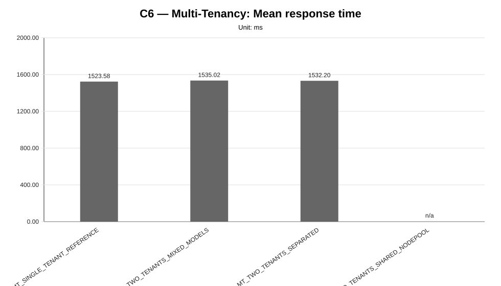
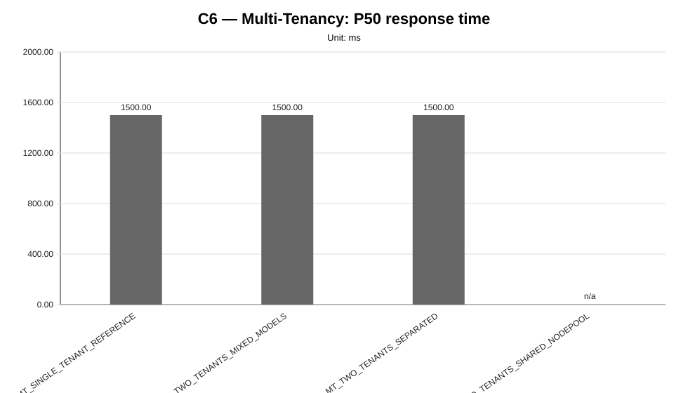
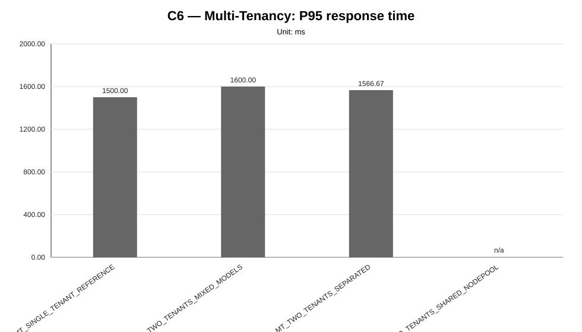
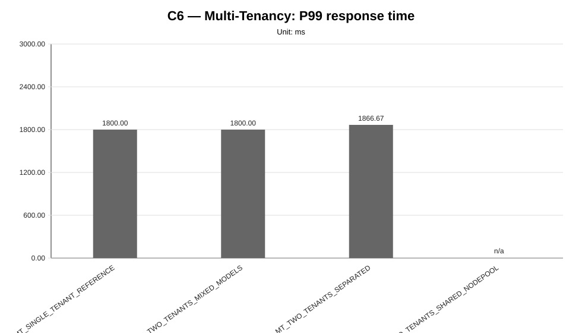
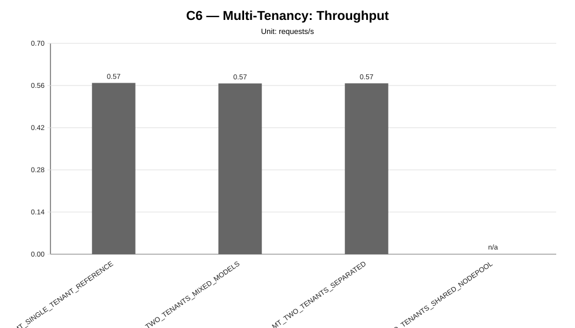
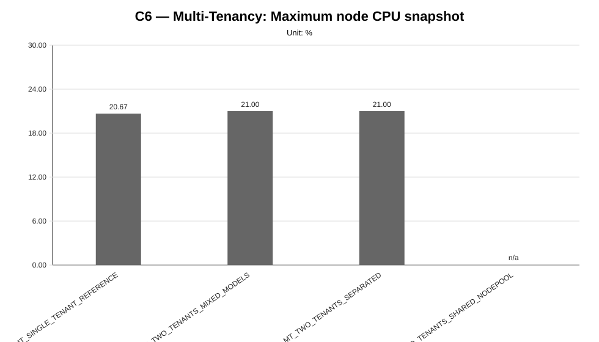
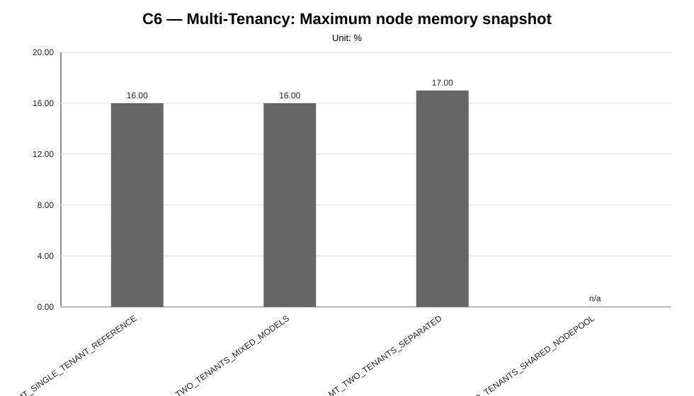
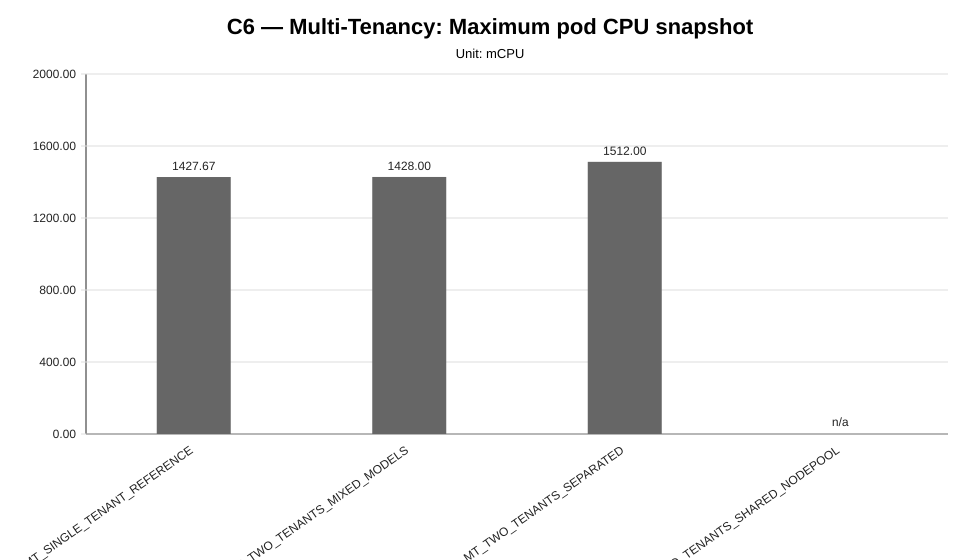
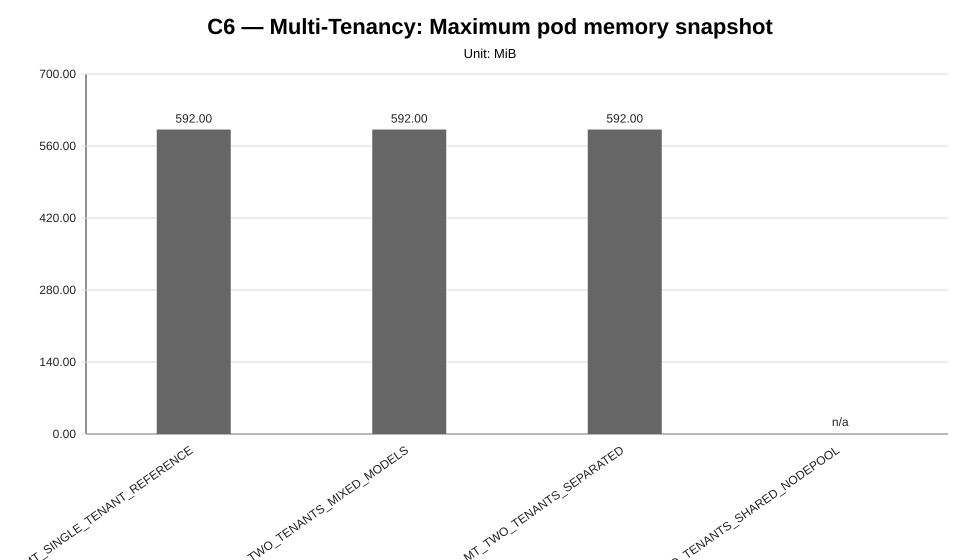

Cycle ID: C6
Sweep: multi-tenancy
Reporting Profile: RP_C6_MULTI_TENANCY
Reporting ID: REP_C6_20260619T174611Z
Generated at UTC: 2026-06-19T17:47:25Z
This sweep-specific report isolates Multi-Tenancy so that the varied dimension, fixed dimensions, measured values, unsupported evidence and diagnosis-based reading can be inspected without navigating the full consolidated report.
Execution status: partially_measured
Execution note: At least one configured scenario has measured benchmark samples, while other scenarios are missing or unsupported.
Varied dimension: tenant topology
Fixed dimensions: infrastructure=INFRA_C6_1CP_4W_8C16G, benchmark tenant=tenant-a, primary model=M1, primary worker-count=W2, workload=WL2.
Reference scenario within the sweep: MT_SINGLE_TENANT_REFERENCE
| Scenario count | Measured | Unsupported | Missing |
|---|---|---|---|
| 4 | 3 | 1 | 0 |
This table is derived from resolved scenario metadata. A parameter is marked as controlled only when it has the same effective value across all scenarios in the sweep.
| Parameter | Resolved value | Interpretation |
|---|---|---|
| Model | varies across scenarios (2 values) | varied or scenario-specific |
| Worker count | 2 | controlled |
| Placement | tenant_primary_distributed_two_node | controlled |
| Workload | users=2, spawnRate=1, runTime=2m | controlled |
| Topology | varies across scenarios (4 values) | varied or scenario-specific |
| Server manifest | varies across scenarios (4 values) | varied or scenario-specific |
| Prompt | Reply with only READY. | controlled |
| Temperature | 0.1 | controlled |
| Request timeout (s) | 120 | controlled |
| Scenario | Status | Varied value (tenant topology) | Model | Worker count | Placement | Workload | Timeout (s) |
|---|---|---|---|---|---|---|---|
MT_SINGLE_TENANT_REFERENCE | measured | single tenant reference | llama-3.2-1b-instruct:q4_k_m | 2 | tenant_primary_distributed_two_node | users=2, spawnRate=1, runTime=2m | 120 |
MT_TWO_TENANTS_MIXED_MODELS | measured | two tenants mixed models | tenant-a=llama-3.2-1b-instruct:q4_k_m; tenant-b=llama-3.2-1b-instruct:q8_0 | 2 | tenant_primary_distributed_two_node | users=2, spawnRate=1, runTime=2m | 120 |
MT_TWO_TENANTS_SEPARATED | measured | two tenants separated | llama-3.2-1b-instruct:q4_k_m | 2 | tenant_primary_distributed_two_node | users=2, spawnRate=1, runTime=2m | 120 |
MT_TWO_TENANTS_SHARED_NODEPOOL | unsupported_under_current_constraints | two tenants shared node pool | tenant-a=llama-3.2-1b-instruct:q4_k_m; tenant-b=llama-3.2-1b-instruct:q8_0 | 2 | tenant_primary_distributed_two_node | users=2, spawnRate=1, runTime=2m | 120 |
This compact table reports the core indicators used to read the sweep at a glance. Detailed percentiles, deltas and resource snapshots are reported in the following extended table.
| Scenario | Description | Status | Sample count | Mean response time (ms) | P95 response time (ms) | Throughput (requests/s) | Unsupported evidence |
|---|---|---|---|---|---|---|---|
MT_SINGLE_TENANT_REFERENCE | MT_SINGLE_TENANT_REFERENCE | measured | 3 | 1523.58 | 1500.00 | 0.5686 | |
MT_TWO_TENANTS_MIXED_MODELS | MT_TWO_TENANTS_MIXED_MODELS | measured | 3 | 1535.02 | 1600.00 | 0.5669 | |
MT_TWO_TENANTS_SEPARATED | MT_TWO_TENANTS_SEPARATED | measured | 3 | 1532.20 | 1566.67 | 0.5673 | |
MT_TWO_TENANTS_SHARED_NODEPOOL | MT_TWO_TENANTS_SHARED_NODEPOOL | unsupported_under_current_constraints | 0 | n/a | n/a | n/a | application_not_ready, failed_scheduling, insufficient_memory, latency_injection, localai_deployment, no_preemption_victims_found, node_affinity_selector_mismatch, pending_pod, preemption_not_helpful, rollout_timeout |
This secondary table keeps the additional metrics aligned with the technical diagnosis while avoiding an excessively wide primary summary table.
| Scenario | P50 response time (ms) | P99 response time (ms) | Mean response time delta (%) | P95 response time delta (%) | Throughput delta (%) | Max node CPU snapshot (%) | Max node memory snapshot (%) | Max pod CPU snapshot (mCPU) | Max pod memory snapshot (MiB) |
|---|---|---|---|---|---|---|---|---|---|
MT_SINGLE_TENANT_REFERENCE | 1500.00 | 1800.00 | 0.00 | 0.00 | 0.00 | 20.67 | 16.00 | 1427.67 | 592.00 |
MT_TWO_TENANTS_MIXED_MODELS | 1500.00 | 1800.00 | 0.75 | 6.67 | -0.30 | 21.00 | 16.00 | 1428.00 | 592.00 |
MT_TWO_TENANTS_SEPARATED | 1500.00 | 1866.67 | 0.57 | 4.44 | -0.23 | 21.00 | 17.00 | 1512.00 | 592.00 |
MT_TWO_TENANTS_SHARED_NODEPOOL | n/a | n/a | n/a | n/a | n/a | n/a | n/a | n/a | n/a |
This table makes the tenant composition explicit. The benchmark target remains the declared primary tenant, while co-tenant clusters expose model-mix, placement and resource-contention context.
| Scenario | Tenant | Namespace | Role | Benchmarked | Model scenario | Model | Worker scenario | Worker count | Placement |
|---|---|---|---|---|---|---|---|---|---|
MT_SINGLE_TENANT_REFERENCE | tenant-a | genai-tenant-a | benchmark_tenant | yes | M1 | llama-3.2-1b-instruct:q4_k_m | W2 | 2 | primary_workers_01_02 |
MT_TWO_TENANTS_MIXED_MODELS | tenant-a | genai-tenant-a | benchmark_tenant | yes | M1 | llama-3.2-1b-instruct:q4_k_m | W2 | 2 | workers_01_02 |
MT_TWO_TENANTS_MIXED_MODELS | tenant-b | genai-tenant-b | co_tenant | no | M2 | llama-3.2-1b-instruct:q8_0 | W2 | 2 | workers_03_04 |
MT_TWO_TENANTS_SEPARATED | tenant-a | genai-tenant-a | benchmark_tenant | yes | M1 | llama-3.2-1b-instruct:q4_k_m | W2 | 2 | workers_01_02 |
MT_TWO_TENANTS_SEPARATED | tenant-b | genai-tenant-b | co_tenant | no | M1 | llama-3.2-1b-instruct:q4_k_m | W2 | 2 | workers_03_04 |
MT_TWO_TENANTS_SHARED_NODEPOOL | tenant-a | genai-tenant-a | benchmark_tenant | yes | M1 | llama-3.2-1b-instruct:q4_k_m | W2 | 2 | workers_01_02 |
MT_TWO_TENANTS_SHARED_NODEPOOL | tenant-b | genai-tenant-b | co_tenant | no | M2 | llama-3.2-1b-instruct:q8_0 | W2 | 2 | workers_01_02 |
comparative_signal_available, confidence: medium).medium).medium).








not_executed sweep means that neither measurement CSV files nor unsupported-scenario evidence were found for any configured scenario in that family.